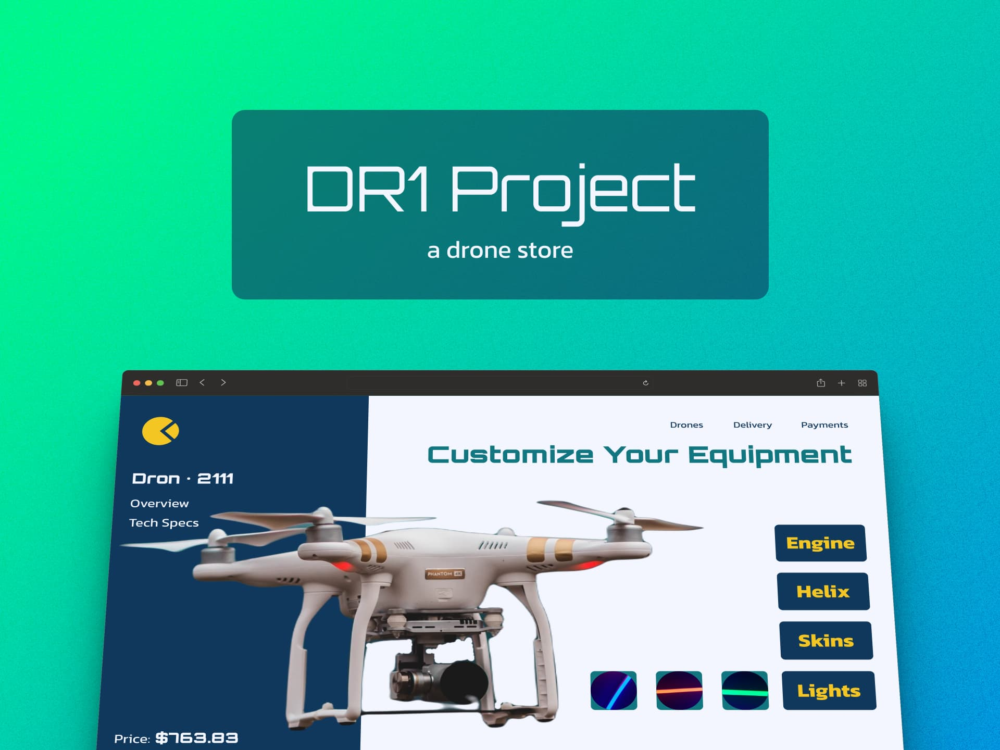
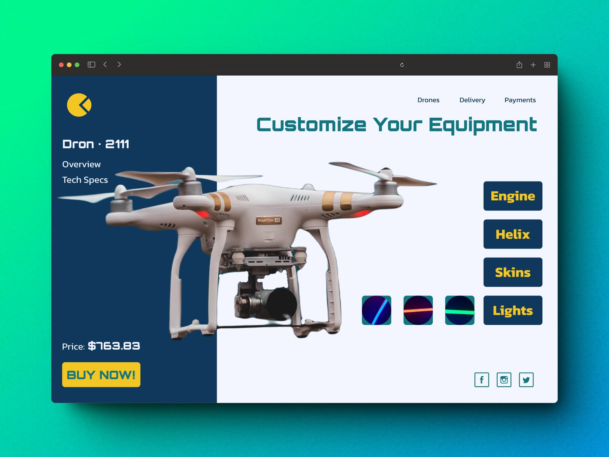
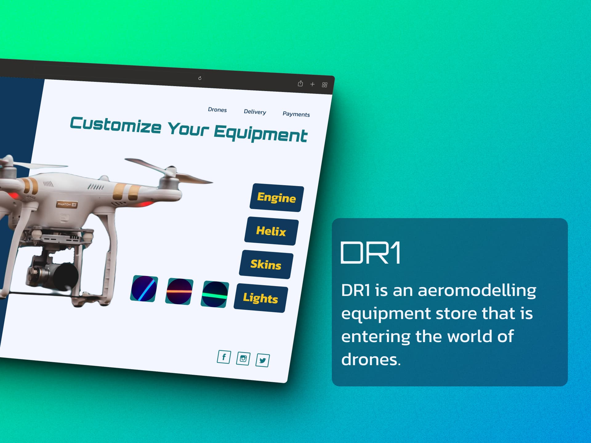
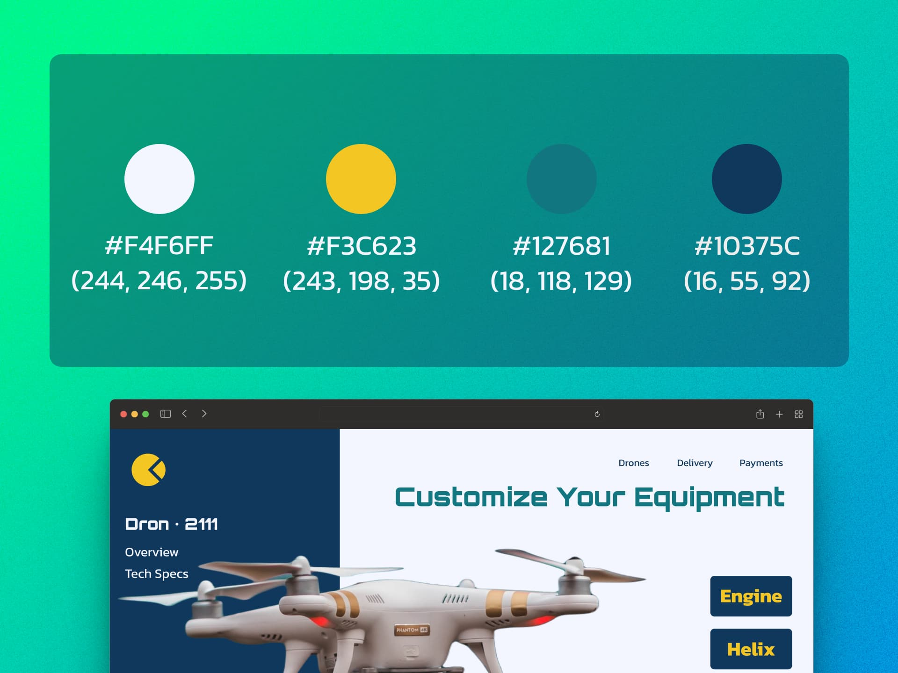
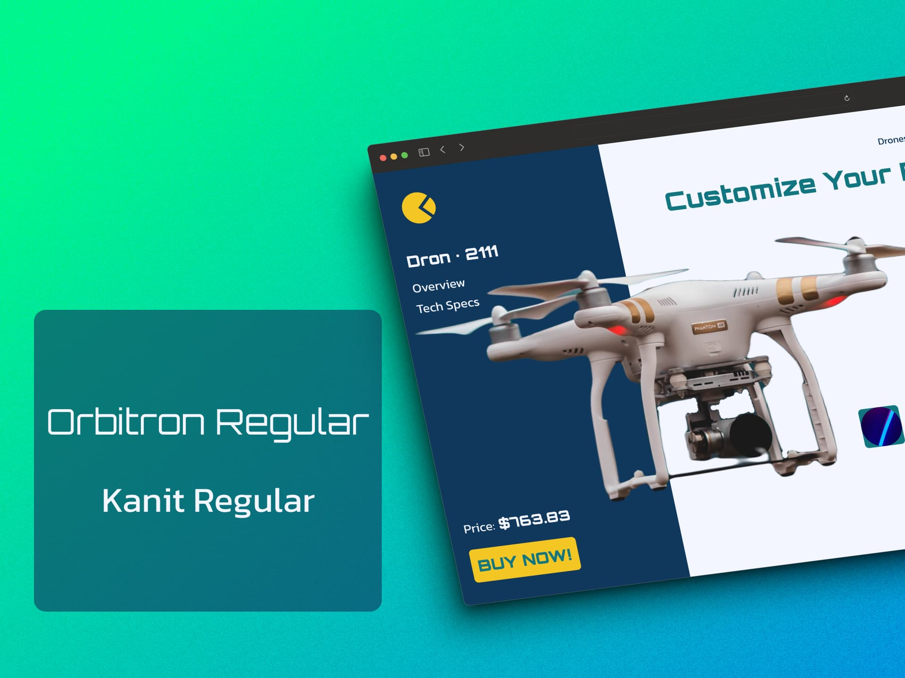
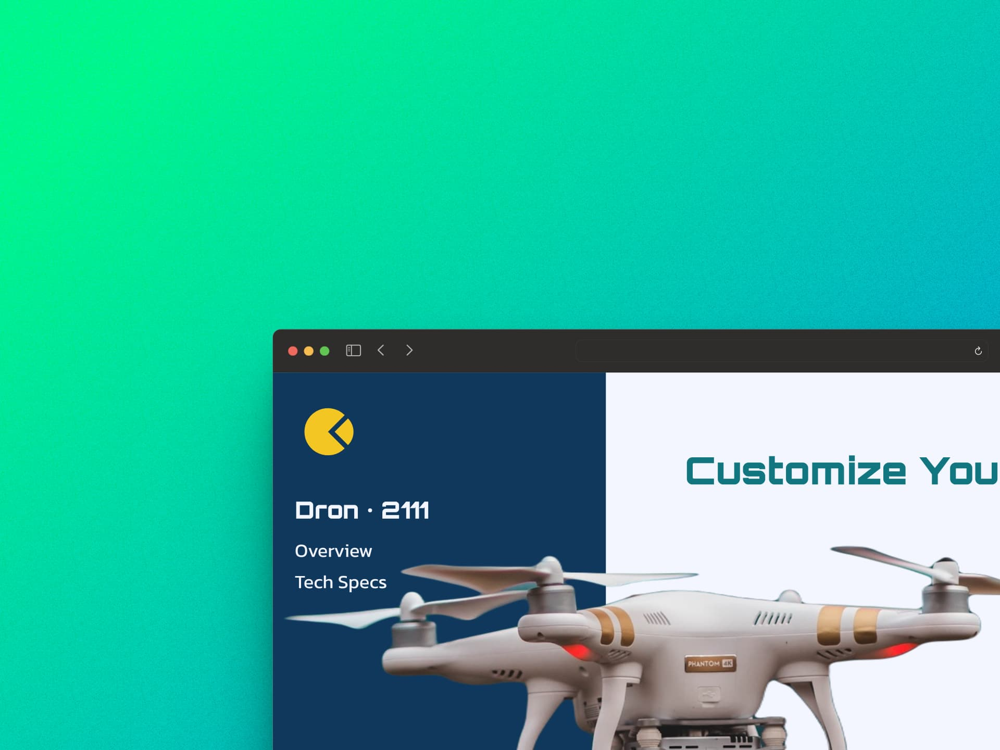
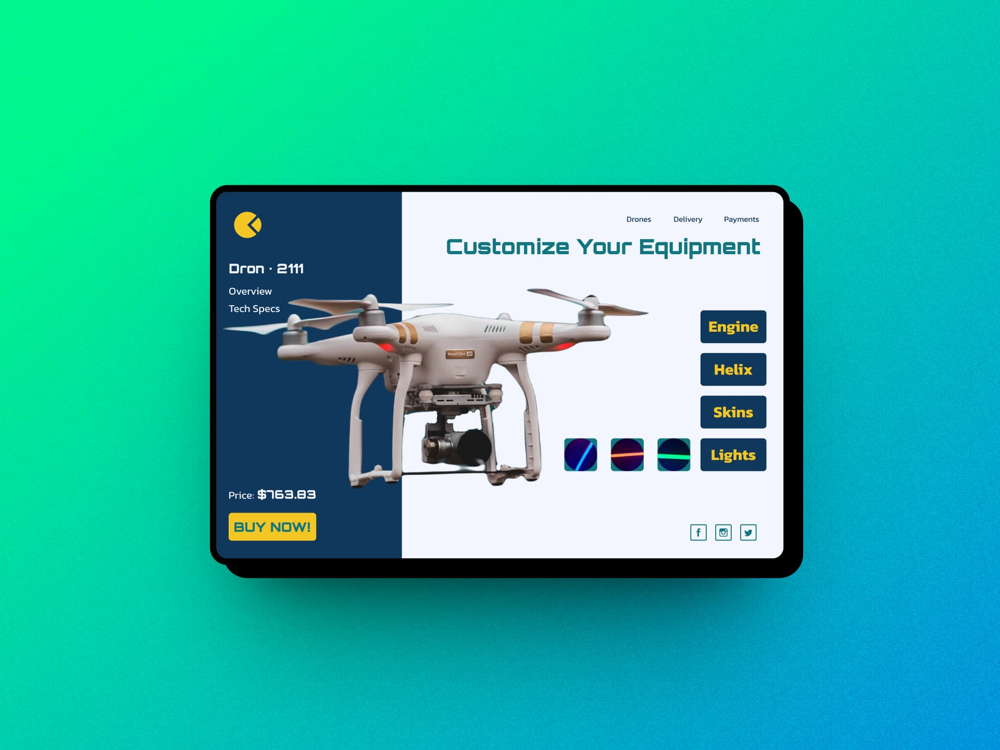

DR1 Project
Product Design | UI/UX Design | Interface Design | Landing Page
DR1 is a fictional product design and landing page project.
General information:
- Company Name: DR1
- Specialization: Drones for aeromodelling and leisure
- Service Description: Customization of drones according to the client's tastes and the available kits.
Project Objectives:
- Service Launch: Create an attractive landing page to promote the new drone customization service.
- Generate Interest: Attract customers interested in personalized drones.
- Inform about Customization Options: Highlight the options available to adapt drones to individual customer preferences.
Target audiences:
- Drone Enthusiasts: People interested in airplane modeling and leisure with drones.
- Potential Clients: Those looking for a unique and personalized drone.
Landing Page Content:
1. Attractive Header:
- Eye-catching title that highlights drone customization.
- Custom drone images.
2. Personalization Options:
- List the available options (colors, designs, accessories, etc.).
- Show visual examples of custom drones.
3. Design and style:
- Colors: Use colors related to technology and innovation.
- Images: Include photographs of custom drones in action.
Photographs Used:
jared-brashier-duNHkmSkW6M-unsplash by Jared Brashier
andreas-rasmussen-C8UjCsWp3Go-unsplash by Andreas Rasmussen
mika-baumeister-9LeEVZ6czAU-unsplash by Mika Baumeister
jakob-owens-rcQoTu1-5v0-unsplash by Jakob Owens
clay-banks-0VfnZbQd98c-unsplash by Clay Banks
leonardo-sanches-ttgvum3OWII-unsplash by Leonardo Sanches
They can all be found on Unsplash, many thanks to the artists.






